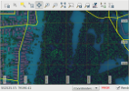
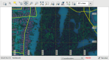
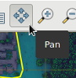
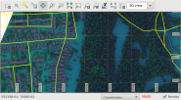
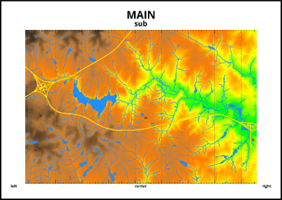

DESCRIPTION
m.printws adds a quick 'print workspace'
function to GRASS GIS. Its purpose is to read a saved workspace file
and render its content into a bitmap or PDF file similar to what the
user configured in the workspace file for screen display, originally.
As an opposite to other methods, the user is not required to create a separate map definition.
The module creates bitmap files so it is not suitable to produce professional cartographic quality.
However, the following usage scenarios are recommended:
- Get a high resolution bitmap or PDF copy of a workspace composition to send in e-mail or include in office documents.
- Produce a quick printable page of the current screen composition.
- Use the main GRASS GIS window as a mapset composer. Supporting multiple displays whole mapset compositions
could be saved as normal workspaces and printed in one run. Being a regular GRASS script it could be called from other
scripts and command line as well. No GUI is necessary to be started since m.printws processes saved workspace files.
- Automatic redraw and regeneration of illustrations attached to a publication (See Flexi option).
NOTES
The module is set up to run with a full set of default values. To get quick result
it is enough to specify the workspace file as input and the name of the output file without its exentsion
since it is added autmatically depending on the selected output format. It creates a PDF format A4 landscape
page at 150 dpi as default. Margins are 25mm, map area is 1000mm. Map frame is centered between the margins.
When selecting font, font names visible to GRASS GIS are not self evident. To ease font selection an "*" can be used to ask
the script to look for a matching font. For example: titlefont="Open*" should find OpenSans or similar variations.
While running, the module modifies the map area edges ratio according to the region edges ratio.
It also reduces the map area to fit between margins.
It means that even faulty settings are corrected automatically.
This is why initial settings of 1000mm map size and -1,-1 placement results an optimally filled and fitted page.
When reducing the target dpi resolution the content gerenation is very fast.
It is recommended to run tests around 100dpi or lower and once we are satisfied with the layout
it is time to set the final target dpi.
The module tries to render everything what are checked on the layer list and also adds overlays like barscale,
legend and north arrow*
*=As of August, 2016 overlay modules positioning is slightly different on a map display compared
to the created maps in files. With manual aligment and saving the workspace again the required positions
could be set manually.
Some drawbacks of the module which should be taken into consideration:
- Depending on the number of layers with opacity lower than 100% the number of
temporarily generated files may increase. An A4 300 dpi page consumes ~33MB
disk space and when joining the layers all these are read into memory or swapped
to disk by ImageMagick. Using many transparent layers, higher page size or higher
resolution may slows down processing. Please check you system monitor while the module
runs to follow memory and disk consumption. The default 150 dpi is good for testing compositions
meanwhile also saves disk space and processing time. 300 dpi or more is recommended for production printouts only.
- Font size of label files is not fitted yet to the dpi set by the user. Label
files should be regenerated to lower or higher font size according to dpi size.
Please consider that modern screens are around 100dpi or higher. If you render
300 dpi your labels should be drawn using 3 times bigger font size measured in dots.
- Some modules like d.wms (which can be added to displayed layers list
in GUI to download, transform and display external WMS data source) download
data again for each run. This is normal, however slower than rendering to a map
display window. The reason is that map display windows won't download again the
data if you simply redraw the screen meanwhile m.printws cleans up after
each run so there is no chance to create a cache mehcanism in the background.
The module changes region meanwhile it runs but restores the original when
finished.
Vector legend (d.legend.vect) information
The d.legend.vect module integrates well with the GRASS GIS Layer Manager.
When the user exits the GUI, its settings
and status became invalid. It means that d.legend.vect may face problems
when restarting GRASS GIS and trying to use the
saved workspace file with m.printws with its old settings.
To prevent such issues do the following steps:
- Compose your vector legend using the GUI as it is provided by d.legend.vect.
- When you are staisfied with the result or preparing for printing with m.printws, set an output CSV file in the
d.legend.vect dialog. This could be done on the In/Out tab.
- Click the OK button.
- In the background, your composed legend contents will be listed
to the corresponding CSV file.
- Reopen the d.legend.vect dialog.
- On the In/Out tab cut the text from the "Output csv file:" field and paste it to the "Input legend file:"
- Clik OK and check if you legend is still the same as you want it to be.
- Save the workspace as usual.
Thusly prepared vector legends will be printed correctly by m.printws.
If you would like to modify your legend, delete the "Input legend file:" field on the In/Out tab and also repeat the process above
before printing.
Multiple display support
When your workspace contains more than one display definitions m.printws would create multiple maps printing all displays on a
separate page in a separate file.
File naming is automatic and works like demonstrated blow if having to displays named 'Downtown' and 'OVERVIEW OF CITY':
- File name entered for output: /path/to/file/outname.pdf
- Generated map 1: /path/to/file/outname_DISPLAY_1_Downtown.pdf
- Generated map 2: /path/to/file/outname_DISPLAY_2_OVERVIEW OF CITY.pdf
When regenerating the map the files are overwritten. Selecting a full name as output (outname_DISPLAY_2_Downtown.pdf)
the module will recognize its own additinons _DISPLAY_2_.... and .pdf and won't duplicate them in the newly generated filenames.
Windows specific settings for ImageMagick
ImageMagick (IM) is essential for merging createt map layers and convert to the desired format. On Windows,
IM should be installed by the user and be sure to add IM program directory to the PATH. It is done by the
IM installation program on windows. However, for GRASS GIS, the OSGeo4W environment should be changed.
Find the o4w_env.bat file in the OSGeo4W installation path. This is usually
under C:\OSGeo4W\bin.
Look at this part:
REM start with clean path
set Path=%OSGEO4W_ROOT%\bin;%WINDIR%\system32;%WINDIR%;%WINDIR%\WBem
REM start with clean path
set Path=%OSGEO4W_ROOT%\bin;%Path%;%WINDIR%\system32;%WINDIR%;%WINDIR%\WBem
Tips and tricks
Title macros
There is a macro possibility for titles.
- $DISPLAY - as it is in the title field by default - in any of the text fields the name
of the corresponting display will be used for text.
- $USERNAME - for user login name
- $TIME24 - 15:25:33
- $DATEYMD - 2016.08.02
- $DATEMDY - 08/02/2016
- $GXW - name of the workspace file printed (full path)
Please take care of possible command line variable expansion rules of your
own operating system or shell. For example on Linux or generally in Bash $ sign
is used for shell variables. So, when calling m.printws from command line take care
to use single quotes around such parameter values like this to prevent substitution:
... maintitle='$DISPLAY' ...
Fill your map display
By filling the map display of GRASS GIS positioning of map gadgets like legends,
scale and north arrow could be more consequent. A fully drawn map window is also a space saver
on paper hardcopies.


Figure: Demonstration of filled or partly filled map displays
On the figures above the difference is clearly visible. Before running m.printws it is recommended to fill the
map display fully with map content. It could be easily done with the Pan tool.


Figure: Using Pan function display could be filled again
Using the tool and making a minor movement or a simple click the map will fill the display
again. After this alignment with the Pan tool the workspace must be saved again
so m.printws could print up to the newly set extents.
Making illustrations with the Flexi page option
When creating figures for scientific articles or book illustration purposes maps usually
don't have elements like titles and others outside the map frame.
In research papers map content is described in subtitles as Figure nn.:
and so on.
In this case page options like A4, or A4 landscape would always have white stripes on
the top/bottom or left/right even when margin is set to be zero.
This is because the ratio of the
edges of the map never exactly follows the ratio of the A4 or other page
edges. Supporting the creation of publication ready images (especially when
the target format is tif, png or jpg) the Flexi option is introduced
as a virtual page size. Using the Flexi page:
- Titles and other external elements won't be generated even if they would be defined.
- Page content will be reduced to the map area only.
- There will be no margin independently of the ratio of the map edges.
- No postprocess is necessary (for example: cutting to size in photoshop ).
Illustration redraw can be fully automatic in case of content change
by repeating the m.printws run
Background: The Flexi mechanism actually sets up the same layout
as it is specified with margins and titles on a 300x300mm page and then
cuts off everything outside the map frame together with cancelling the
rendering of title elements.
An ideal resolution could easily be set using the dpi option of m.printws.
EXAMPLE
# create am A4 landscape 150dpi PDF copy of a workspace
m.printws input=/home/kuszi/grassdata/Duna/maps/VP/nice_vectors_workspace.gxw \
output=/home/kuszi/grassdata/Duna/maps/VP/sample_generated_printws maintitle=MAIN \
subtitle=sub psunderleft=left psunderright=right psundercentral=center \
region=cartosim_2@PERMANENT pagemargin=10
Figure: Screen view of workspace

Figure: m.printws run example created from the same workspace
SEE ALSO
d.legend.vect,
g.gui,
ps.map is an alternative option,
d.labels,
ImageMagick
GRASS environment variables for
rendering (GRASS_RENDER_FRAME)
AUTHOR
Robert Kuszinger, Giscom Kkt Hungary
Based on d.* commands and their functions in GRASS 7 by many authors.
Depends on ImageMagick multi-platform image manipulation tools.